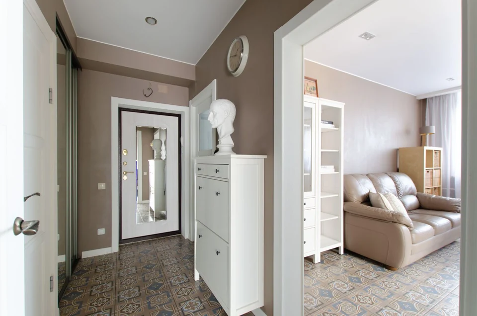
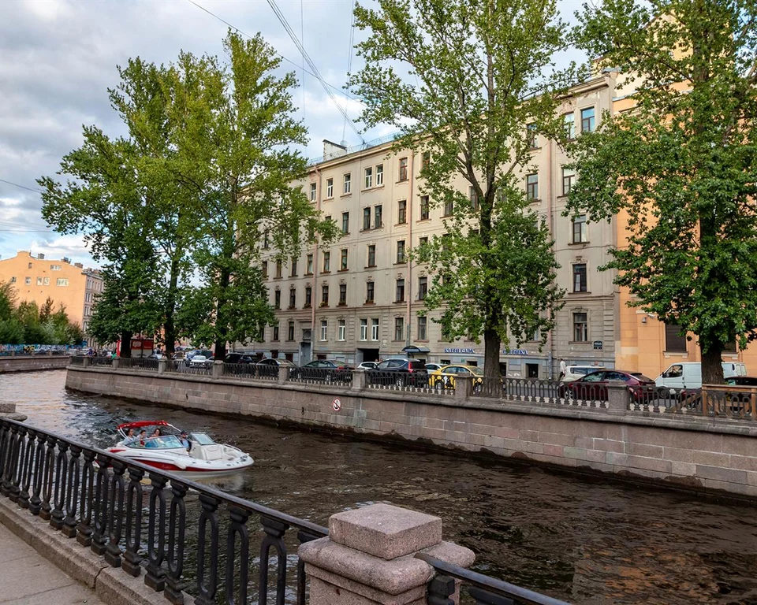
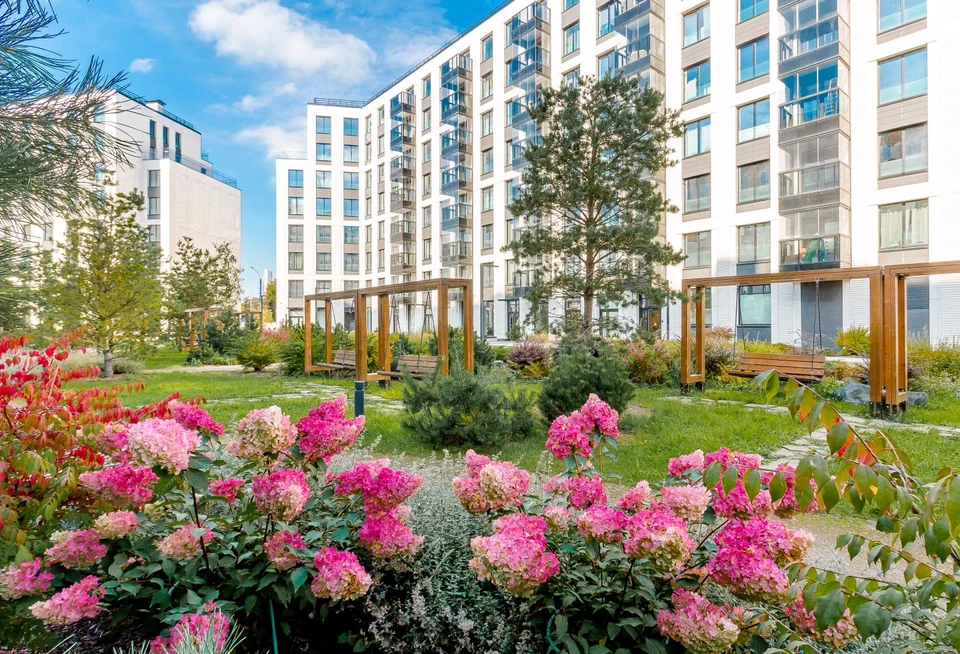

Санкт-Петербург, Афанасьевская ул., 1Квартира с террасойПлощадь60,6 м²Этаж8Заказать звонокПодробнее
Санкт-Петербург, наб. канала Грибоедова, 46Квартира у канала ГрибоедоваПлощадь78 м²Этаж3Заказать звонокПодробнее
Санкт-Петербург, Петровский проспект, 28 к 1Квартира у воды на ПетровскомПлощадь57,2 м²Этаж8Заказать звонокПодробнее